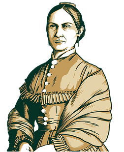
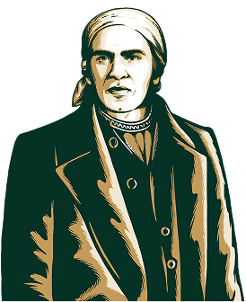
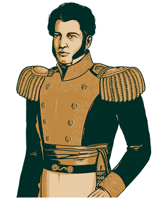

28 de septiembre de 1810 - Toma de la Alhóndiga: Las fuerzas insurgentes logran su primera gran victoria militar en Guanajuato tras un sangriento asalto al granero fortificado.
15 de septiembre - La Noche del Grito: Conmemoración cívica nacional donde el Presidente de México da el grito desde Palacio Nacional.
16 de septiembre de 1810 - El Grito de Dolores: El cura Miguel Hidalgo y Costilla convoca al pueblo de Dolores, Guanajuato, a levantarse en armas contra el virreinato español.
27 de septiembre (1821) - Consumación de la Independencia: El Ejército Trigarante ingresa a la Ciudad de México poniendo fin a 11 años de conflicto armado.
13 de septiembre (1847) - Defensa del Castillo de Chapultepec: Los Niños Héroes combaten contra las tropas invasoras de Estados Unidos.
Personajes Ilustres
Miguel Hidalgo y Costilla (El Padre de la Patria): Sacerdote y militar novohispano que inició el movimiento libertario aboliendo tempranamente los tributos y la esclavitud.
José María Morelos y Pavón (El Siervo de la Nación): Genio militar y estratega del movimiento insurgente en el sur del país, autor de la visión republicana de México.
Josefa Ortiz de Domínguez (La Corregidora): Pieza clave de la conspiración de Querétaro; su oportuna advertencia permitió iniciar la rebelión antes de ser capturados.
Vicente Guerrero: Líder de la resistencia insurgente tras la caída de Morelos. Famoso por su frase: «Mi patria es primero».




Datos y Curiosidades
del Mes Patrio
Dato Curioso (Los Chiles en Nogada): Se crearon en Puebla a finales de septiembre de 1821 por monjas agustinas para agasajar a Agustín de Iturbide tras firmar los Tratados de Córdoba, usando los tres colores trigarantes (verde, blanco y rojo).
Mito desmentido (Juan Escutia y la bandera): La creencia popular sostiene que Juan Escutia se arrojó envuelto en la bandera nacional, pero registros militares señalan que el lábaro patrio fue en realidad capturado como trofeo de guerra por el ejército estadounidense en la azotea del castillo.
Dato Curioso (Mes Patrio): A septiembre se le llama oficialmente "Mes de la Patria" en México porque concentra el nacimiento del movimiento (16 de sep), su victoria definitiva (27 de sep) y la resistencia en Chapultepec (13 de sep).